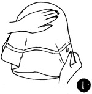
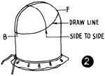
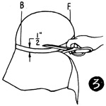
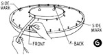
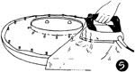
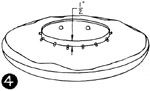
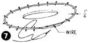
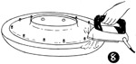
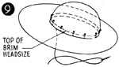

1952—How to Make Hats
by Ruby Carnahan
Blocking Felt Crown and Brim on Separate Blocks
MATERIAL REQUIRED
- Utility head block in correct headsize
- Utility brim block with correct headsize
- Fur felt body
- 3/4 of a yard of headband ribbon
BLOCKING CROWN
Wrap felt body in a damp cloth for several hours before blocking. (Illus. 1) Pull felt body on Utility head block, steam, pull and stretch felt until all wrinkles have been removed and felt fits block perfectly. Pin felt to block (with push pins).
(Illus. 2) Measure your head from back to front and from side to side, the depth crown is to be. Mark these measurements on felt, and draw a line around block on felt. Mark back and front of crown.
(Illus. 3) When felt crown is dry, remove crown from block and cut off excess felt on crown 1/2" below line on felt.
BLOCKING BRIM
Use felt piece cut off from bottom of crown for the brim. Dampen.
(Illus. 4) Put felt piece on Utility brim block. Turn felt up 1/2" around headsize on block. Pin felt to block around headsize. Steam, pull and stretch felt out on brim block as much as possible and pin edge of brim to block.
(Illus. 5) Lay a damp cloth on felt brim and steam press felt around headsize until all wrinkles have been removed from felt brim and felt fits headsize on brim perfectly.
Illus. 6. Measure width brim is to be in front, back and each side and draw a line on felt (with tailors chalk) cut off excess felt 1/4" below line.
WIRING BRIM EDGE
(Illus. 7) Measure a wire to fit edge of felt brim and join wire with a wire joiner.
(Illus. 8) Turn felt over wire 1/4" around edge of brim. Pin and sew felt to under side of brim using a small overcast stitch. Pin wired brim on block again and steam wired edge.
SEWING CROWN AND BRIM TOGETHER
(Illus. 9) Match markings on crown and brim, pin crown over brim headsize. Sew crown to brim around headsize using a small overcast stitch.
Finish headsize with a swirled ribbon headband.
Instructions for headband ribbon on page 45.